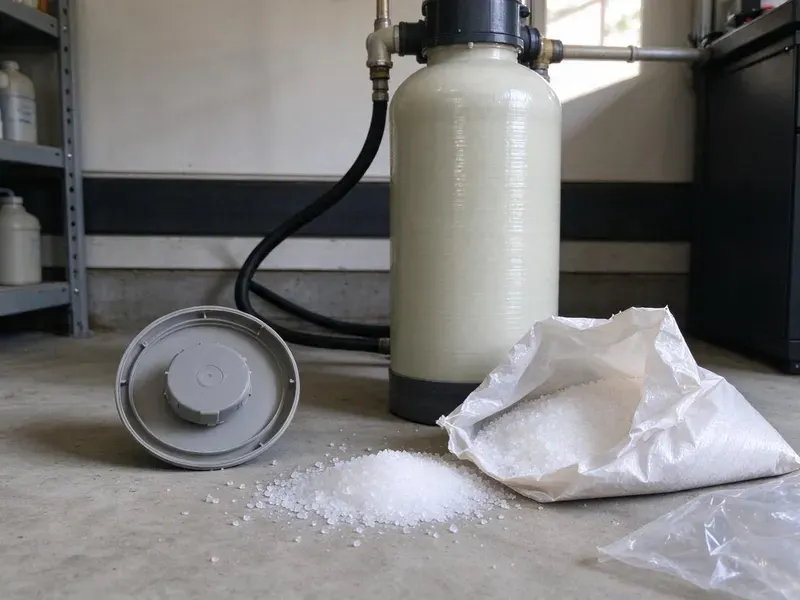

Tankless Water Heater Maintenance in Gillette, WY
Annual descaling from JKV Plumbing keeps your tankless warranty paperwork current and the heater firing clean in Gillette, WY.
- Condensing Unit Know-How
- Service Valve Kit Upgrades
- Gas and Electric Units
- Flat Service Pricing

Set Up a Tankless Flush in Gillette, WY
A flush once a year keeps scale off the exchanger and the error codes quiet.
Keeping Tankless Heaters Running in Gillette, WY
JKV Plumbing handles tankless water heater maintenance all over Gillette, WY, from the descaling flush to the inlet screen and the venting. Most problems start in the heat exchanger. A water softener or filtration system is a common upgrade for Wyoming homeowners dealing with scale and staining. We set the flush schedule by your hardness reading, not a calendar guess.
Some of what we do:
- Condensate trap and neutralizer refills
- Flow sensor and code history review
- Flame rod and igniter testing.

Additional Plumbing Maintenance Services in Gillette, WY
Our maintenance and specialty plumbing services in Gillette, WY catch small problems before they become emergencies.


Customers
Why Choose JKV Plumbing for Tankless Water Heater Maintenance in Gillette, WY?
Sediment and scale do different damage. Sand and grit collect on the inlet screen and starve the flow sensor. Scale bakes onto the hottest exchanger tubes, and only a pump-driven flush moves it, not a garden hose rinse.
- Less Wasted Water, A heater that lights fast wastes less water while you wait at the tap.
- Paper Trail, Every visit gets a dated record listing readings and any parts used for your warranty file.
- Warranty Coverage, Most manufacturers ask for periodic maintenance, and some deny exchanger claims when scale damage turns up.
Citywide Coverage
Condos with a tankless in a utility closet get the same service as a big house with two units in the garage. Only the access changes. Tight closets just take a little longer to set up the pump.
Experienced Team
Gas units and electric whole-house models both come up on our schedule, and every tech is trained on condensing and non-condensing gas heaters alike. Any tankless you own, we can service. We check the wiring on electric models as well.
Safety-First Approach
Vent terminations need distance from operable windows and doors, and we measure those clearances on every visit against the manual's chart. Condensing units also get a neutralizer check. Acidic condensate eats cast iron drain pipe over time.
Trusted Certified Gillette Plumbing Services Professionals
At JKV Plumbing, we take pride in licensed, certified plumbing services throughout Gillette, WY. Credentials matter in this trade. Our plumbers hold recognized industry credentials, and they follow strict safety and quality rules on every repair, installation and maintenance call we run.
Call Us Now PHCC Plumbing Contractor Recognition
PHCC Plumbing Contractor Recognition Better Business Bureau (BBB) Accreditation
Better Business Bureau (BBB) Accreditation Angi Certified Pro
Angi Certified Pro ISO 9001 Quality Management Certification
ISO 9001 Quality Management CertificationWhat Our On-Demand Maintenance Covers in Gillette, WY
Tankless Vent Inspection in Gillette
Gas tankless heaters push exhaust out through a vent that has to stay sealed from the heater all the way to the termination outside the house. On a condensing unit the PVC or polypropylene vent should pitch back toward the heater. We check every joint and test for carbon monoxide near the unit. Wasp nests in vent caps are common.

Tankless Banks for Restaurants and Apartments in Gillette
Cascade systems link several tankless units to one controller that fires them in turn. Heavy use means scale builds faster than in a single home unit. Each heater gets descaled, and we check that the controller spreads the load evenly. Quarterly service is common.
What Tankless Maintenance Saves in Gillette
Scale on an exchanger acts like insulation. A unit with a thick layer burns noticeably more gas for the same shower than a clean one, and the extra cost adds up month after month. We lay out the maintenance price next to the likely repair cost so you can decide.
Rinnai Tankless Service in Gillette
Rinnai units tell you a lot through the controller. A code 11 is a failed ignition, while code 12 is a flame that lit and then dropped out. We clean the Rinnai air intake filter and look over the flame rod for soot or cracks. The LC codes are scale warnings, and they usually clear once the exchanger has been flushed and the unit is reset.
Tankless Error Code Diagnosis in Gillette, WY
An error code is the heater telling you what it saw. On a Rinnai an LC code means scale, on a Navien E003 means no ignition, and on a Noritz a 90 usually means an air or exhaust problem. We pull the code history before touching anything. If a part has failed, you hear the repair and the price before we start.
Step-by-Step Tankless Flushing in Gillette
First we shut off the gas and power, then close both isolation valves so the heater is cut off from the house plumbing. Solution goes from a bucket into the cold port, out the hot port and back to the bucket. After the cycle we rinse with clean water and pull the inlet screen. Then we check for leaks.
Emergency Tankless Repair in Gillette, WY
No hot water before work is a rough start. Nine times out of ten, a no-heat call is a dead igniter or a scaled exchanger tripping the high-limit. The truck carries igniters and descaling gear, so we can usually fix it that day.

Home Tankless Flushing in Gillette
A water softener or filtration system is a common upgrade for Wyoming homeowners dealing with scale and staining. Inside a tankless heater, that water runs through a small copper or stainless coil while the burner fires, and every minute of hot water leaves a little calcium behind. A pump on the service valves pushes descaling solution through the coil for roughly an hour. Flow comes back. The temperature holds steady and the high-limit shutdowns stop.
Tankless Descaling Service Near Me in Gillette, WY
Searching for tankless maintenance near me in Gillette, WY usually means the heater is already acting up. Our plumbers work out of trucks stocked with descaling pumps and inlet screens, so we can often get to you within a day or two. That keeps small problems small.
Type 'tankless water heater maintenance near me' into a phone in Gillette and you get a long list. Ask if they bring a pump. We carry valve kits too, which means a heater missing service valves can be fitted and flushed in one trip.
JKV Plumbing at a Glance
- Licensed and insured plumbers serving Gillette, WY
- Same-day appointments and 24/7 emergency response
- Upfront, flat-rate pricing before work begins
- 4.9-star rated by 782+ Wyoming customers
Gillette Map
Gillette Information
- Population
- 33,496
- Area codes
- Local
- Service area
- Gillette and communities within 40 miles
- Nearby
- Sheridan, Douglas, Casper, Powell
A water softener or filtration system is a popular upgrade for Wyoming homeowners dealing with scale and staining. Most tankless owners in Gillette, WY plan on one descaling flush a year.
Talk to a Plumber
Call JKV Plumbing for reliable plumbing work done by licensed pros in Gillette, WY.
Our Specialized Plumbing Services in Gillette, WY
At JKV Plumbing, you get every kind of plumbing service from one company across Gillette, WY. From leak detection to full system installs, our team works fast and charges fair prices on homes and commercial properties alike. Here are the core services we offer:


Our Tankless Descaling Process in Gillette, WY
The flush is the long part, and the checks fit in while the pump runs.
Call or Book Online
Call (307) 393-4049 or book through our website. We ask for the brand, the model and any codes you have seen, then give you a set price.
First Look
The tech walks around the unit for leaks and corrosion, reads the error history and checks the vent before shutting anything down.
Descale the Exchanger
With gas and power off, we pump descaling solution through the exchanger for about an hour, then rinse with clean water.
Frequently Asked Questions About Tankless Water Heater Maintenance in Gillette
Not usually. Expect $175 to $350 for most descaling visits, with brand and access setting the exact number. Adding an isolation valve kit runs another $150 to $300.
Part of it is. Homeowners can clean the inlet screen, while descaling and gas checks call for a pump, a manometer and practice. Get it wrong and you risk a voided warranty or a gas leak.
Softened or treated water leaves far less scale in the exchanger. Some brands recommend treatment once hardness passes a set level. A water softener or filtration system is a common upgrade for Wyoming homeowners dealing with scale and staining.
Yes, on many brands. Scale damage is a common exclusion on heat exchanger warranties, so dated service records are the best proof you kept up with it.
Plan on one to two hours. The descaling cycle itself takes about an hour, and the rest is setup and testing the heater under full load. A badly scaled unit may need a second cycle.
Fifteen to 20 years is common with regular descaling. Units on hard water that never get flushed can fail in less than half that time.
Yearly is the norm across Wyoming. Homes on very hard water with no softener may need it every six to nine months, and businesses more often.
Scale keeps building. Flow drops, the burner runs longer, and the heater starts throwing codes or shutting off in the middle of a shower. In the end, the exchanger can overheat and crack.
What People Are Saying About Our Plumbing Experts?

Robert G.
The camera showed a full break in our clay sewer line near the street. JKV Plumbing replaced it with a trenchless pipe burst, so the only digging was two small pits in the yard. They let us watch the footage before and after.
Sewer Line Replacement · Torrington, WY
Patricia H.
We had a slab leak that two other companies could not find. JKV Plumbing located it in under an hour with a listening device. They rerouted the line through the attic instead of breaking up the floor, so we kept our kitchen tile.
Slab Leak Repair · Torrington, WYAngela D.
Our sump pump quit during a storm and the water was an inch from the basement carpet. JKV Plumbing put in a new pump with a battery backup that same evening. We have had two heavy rains since. It kicked on both times.
Sump Pump · Gillette, WY
Monica A.
Our water bill nearly doubled in one month with no change in how we used water. The tech checked the meter, heard the leak under the hallway with his equipment, and opened a hole about a foot square. Fixed the same day.
Slab Leak Repair · Gillette, WY
Carlos V.
Our house still had galvanized pipe, and upstairs the shower was a trickle. The crew repiped everything in PEX over three days and patched every drywall hole before they left. The pressure difference is night and day.
Repiping · Gillette, WY
Lisa C.
Water was pouring out from under the washing machine on a holiday weekend. JKV Plumbing talked me through closing the valves over the phone and had a plumber at the house within ninety minutes. It was a burst fill hose.
Emergency Plumbing · Douglas, WY